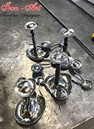
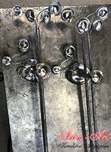
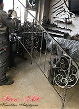
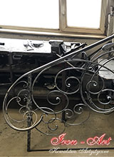
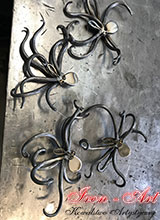
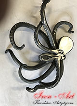
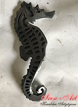
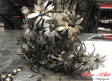

Pracownia kowalstwa artystycznego od kuchni
W pracowni kowalstwa artystycznego Iron-Art Łódź wykonujemy balustrady kute wewnętrzne, zewnętrzne, przedmioty z działu metaloplastyki, a także meble kute!
Dokładamy wszelkich starań, aby nasze balustrady schodowe kute oraz barierki schodowe i elementy metaloplastyczne były wykonane w sposób profesjonalny, szczegółówy i zgodny z Państwa oczekiwaniami!
Przedstawiamy Państwu naszą pracę od kuchni, prezentując proces tworzenia balustrad kutych, metaloplastyki oraz innych wyrobów, które są naszą specjalnością.
Karnisze w kształcie liści Nenufar
Obiektem naszej pracy były końcówki karnisza podwójnego w kształcie efektownych liści Nenufar.


Balustrada kuta z poręczą do drewna
W naszej pracowni kowalstwa artystycznego pracowaliśmy nad balustradą z poręczą do drewna. Skupiliśmy się, zarówno na elemencie zwanym zaproszeniem, jak i na całej części balustrady.


Ozdobne kute ośmiornice i koniki morskie
Prezentujemy ozdobne kute detale w postaci ośmiorniczek oraz koników morskich, stworzone w naszej pracowni kowalstwa artystycznego w Łodzi.



Ozdobne kute bukiety stokrotek
Z okazji Walentynek w naszej pracowni kowalstwa artystycznego w Łodzi powstały liczne bukiety kutych stokrotek. Poniżej prezentujemy Państwu jedną z naszych prac!

Kowalstwo artystyczne
Kowalstwo, to zawód znany ludziom od wieków. Dawniej kowal cieszył się zdecydowanie większą popularnością, gdyż jego prace niejednokrotnie były na miarę złota, a ludzie chętnie korzystali z jego usług. Dziś zawód kowala nie jest już tak powszechny i doceniany, a wszystko z powodu nieuniknionego rozwoju, który spowodował, że obecnie balustrady kute, czy inne wyroby kowalstwa artystycznego można wykonać masowo przy pomocy maszyn.
Dziś kowal, zwany także metaloplastykiem, który prowadzi własną, niewielką firmę, musi stawić czoła wielkim wyzwaniom i pozyskać zainteresowanie klientów. Najłatwiej zrobić to poprzez wyroby, które tworzone ręcznie, bez wątpienia są efektywniejsze, oryginalniejsze i bardziej unikalne.
Metaloplastycy najczęściej specjalizują się w wytwarzaniu mebli kutych lub kutych balustrad, zarówno tych zewnętrznych, jak i wewnętrznych. Wyroby kowalstwa artystycznego, które nie powstały przy pomocy nowoczesnych maszyn, wykonujących praktycznie całą pracę za człowieka, są bez wątpienia dziełem godnym uwagi. Aby stworzyć balustradę kutą, która będzie idealnie wpisywała się w zamysł i szkic ją poprzedzający, potrzeba do tego umiejętności, cierpliwości i precyzji.
Balustrady kute – sztuka z pracowni kowalstwa artystycznego
Kowal, który wytwarza balustrady kute własnoręcznie, jest w stanie stworzyć niepowtarzalny produkt, który dodatkowo może być spersonalizowany specjalnie pod życzenie klienta.
Niewątpliwie zaletą korzystania z mniejszych pracowni kowalstwa jest to, że każdy z zamówionych elementów będzie unikalny i bardziej precyzyjny. Balustrady kute lub meble, które są masowo wykonywane w dużych firmach zajmujących się tego typu produkcją, są tworzone z zamysłem, aby hurtowo wytworzyć jak największą ich ilość.
Dzięki kowalom, którzy do dziś specjalizują się w ręcznym wykonywaniu balustrad w swojej pracowni artystycznej, klienci mają dostęp do oryginalnych, wyjątkowych produktów, niejednokrotnie tworzonych specjalnie na ich zamówienie. Warto zatem zainteresować się ofertą metaloplastyków, którzy stworzą unikatową, ręcznie zdobioną, precyzyjnie wykańczaną balustradę kutą, aniżeli kupić produkt pochodzący prosto z Chin. Dzięki temu, zawód ten wciąż będzie nieśmiertelny!
Zapraszamy serdecznie do zapoznania się z naszą ofertą balustrad kutych, które powstały w naszej pracowni kowalstwa artystycznego w Łodzi!